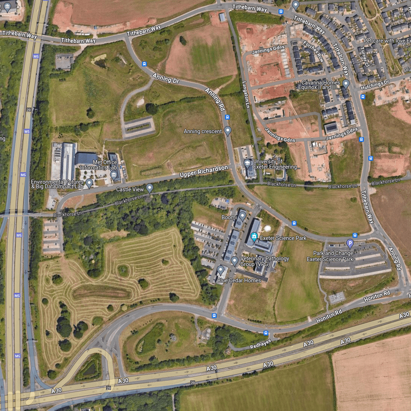
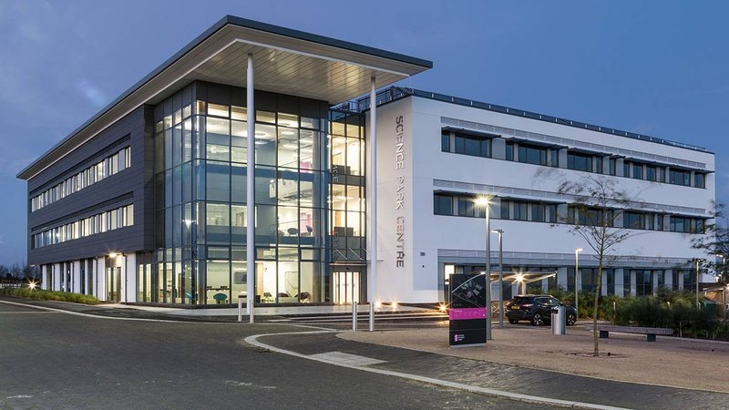
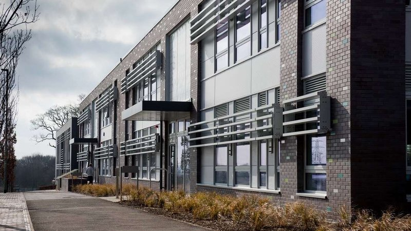
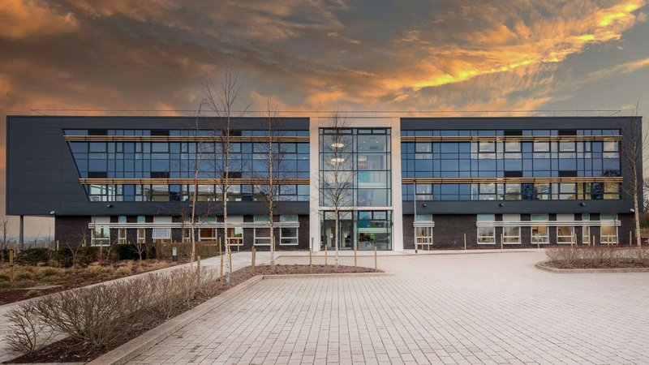
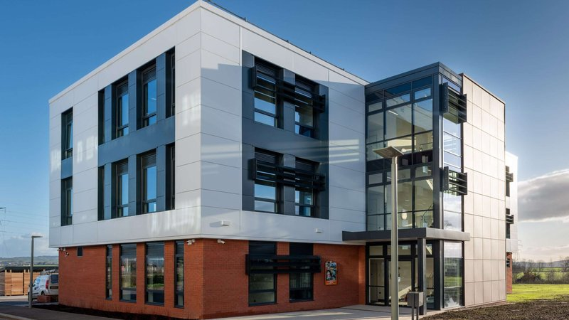
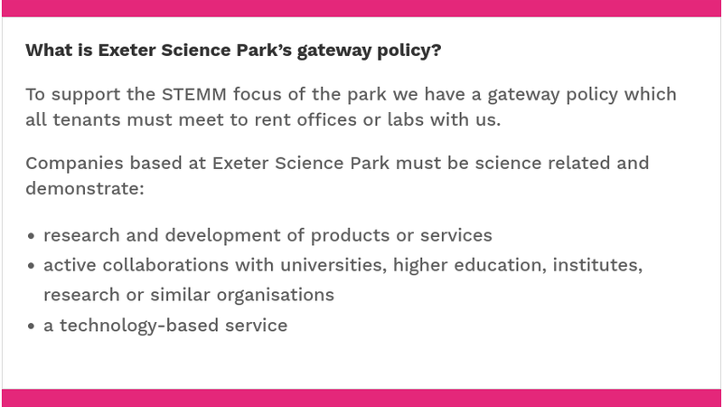

Exeter City Council is to sink an additional £1.25 million into Exeter Science Park after it emerged that the joint venture is unable to repay a total of £7 million in debts owed to or guaranteed by its shareholders, which also include Devon County Council, East Devon District Council and the University of Exeter.
Exeter Science Park is the third city council company to run into trouble after the dissolution of Exeter City Futures, which received more than £1.5 million of public funding, and losses of £4.5 million incurred by Exeter City Living that the council has yet to recoup.
The council’s external auditor recently criticised the council’s approach to governance and financial management of all three companies, identifying a range of issues including lack of performance monitoring, lack of objectives against which performance could be monitored and lack of oversight by councillors.
Exeter Observer analysis has found that only a single council report on Exeter Science Park has been subject to scrutiny since the company was incorporated fifteen years ago and seven of eleven council decisions on the venture have been made in private, with press and public excluded, without the related reports or business plans ever being published.
The council called an emergency general meeting a fortnight ago, bypassing its executive decision-making committee, to increase its equity exposure to the company to more than £2 million on top of £450,000 it previously allocated to fund project development and a £950,000 loan guarantee.
It said it did not have time to follow normal decision-making procedures despite the meeting’s focus on a ten-year loan that was not due for repayment until January next year. The council has sent three different senior officers to act as science park company directors in the past three years.
 Exeter Science Park development site. Bought using £18.7 million SW RDA funding. Image contains satellite imagery © 2024 Maxar Technologies, Map data © 2024.
Exeter Science Park Ltd, which made a loss of £2,500 last year on turnover of £1.44 million, lists fixed assets worth £18 million on its balance sheet of which £15.3 million is freehold property. However its six buildings cost more than £24 million to construct and its 24 hectare Redhayes site was acquired, alongside two hectares to expand adjacent junction 29 of the M5, with another £18.7 million of public money. £4 million has also been spent on roads and other infrastructure.
The council and the three other shareholders hope to rescue the science park, which bills itself as the “South West’s centre of activity for businesses in science, technology, engineering, maths and medicine” (STEMM), by converting more than £7 million it owes into equity in the company.
They then plan to slacken its policies to allow non-STEMM tenants and attract private sector development partners to add to the 68,000 square feet of lettable space it currently provides.
However this approach risks repeating strategic mistakes made in the science park’s initial development phase which included underestimating the impact of competition from cheaper office space in the vicinity and the public sector ownership constraints that make it less attractive to the private sector.
In addition, Exeter Science Park has already diversified its offer. Exeter Observer analysis has found that only around a quarter of the 141 companies it hosts could be considered bona fide STEMM businesses. It already accommodates or provides a registered office address to dozens of real estate development and management companies, financial services companies and holding companies, among other non-STEMM entities.
The science park was expected to have created 2,500-3,000 high-value knowledge economy jobs by this year, but only 750 people are currently employed on site (0.8% of Exeter’s 95,000 employee jobs). Many of the STEMM companies it does accommodate are not the product of local start-up growth but instead rent branch offices and have head offices elsewhere.
Its occupancy levels have fallen from 96% to 70% in the past four years, well below its current 80%-plus occupancy rate break-even point. It appears that the occupancy rate only rose to near-capacity as a result of the pandemic because of a COVID-testing facility that has since closed.
Council officers are right to warn that the rescue plan is riddled with risk and that the shareholders may never get their money back.
 Exeter Science Park Centre. Completed in May 2015 using £4.5 million HotSW LEP “growing places” loan plus £1 million loans from each of Exeter City Council and East Devon District Council.
Exeter Science Park’s origins lie in a 2003 consultant’s report which concluded that Exeter “requires” a science park to support inward investment and provide space for start-ups and a 2003 feasibility study which “suggested” there was sufficient demand to support its creation.
City councillors agreed, now nearly twenty years ago, to provide a £50,000 budget to employ an officer to work on what was described as “a priority project to support the strengthening of the city’s economy”. An update the following year confirmed that a project development partnership had been formed, led by the university and also then including the recently-relocated Met Office.
By 2007 the council had approved another £250,000 for two more budgets as “contributions towards progressing key elements of the project” and a further £750,000 – a quarter of the £3 million equity required from the partners – as a “contribution towards the first stage of the project”. The business plan which provided the rationale for the investment was not published.
In the event the city council invested £675,000 in a 21% stake in the joint venture, which was incorporated in February 2009. Councillors “welcomed progress” on the project at a meeting the following month. It was expected to create between 2,500 and 3,000 jobs “in the first fifteen years or so”.
Devon County Council, which expected the value of its £1.75 million investment in the venture to “rise substantially over the long-term”, bought the Redhayes site with an £18.7 million South West of England Regional Development Agency grant and the public sector-capitalised Exeter Science Park Ltd embarked on its first year of operation in 2010-11.
 Hedy Lamarr, Isaac Newton and Alan Turing “grow-on” buildings. Completed November 2018 using £4.5 million HotSW LEP “growth deal” funding plus a £1.5 million East Devon District Council loan.
By the autumn of 2012 phase one development had “stalled” because of “economic conditions”. The first of a sequence of unpublished reports on the company was presented in private to the council executive committee, with press and public excluded, without the report going through scrutiny.
The decision record says councillors “supported” a revised business plan, approved another £150,000 contribution towards project cost overruns and agreed to provide a loan guarantee of up to £914,000 to enable the company to borrow £4.5 million from the newly-created Heart of the South West Local Enterprise Partnership that had replaced the regional development agency.
Six months later the committee agreed to increase the loan guarantee to up to £1,254,000. Then six months after that it also agreed an “additional support measure in the form of a loan facility to enable the Science Park Centre and Exeter Science Park to make progress against the prevailing difficult economic background”. This time the decision record didn’t even say how much the loan would be, let alone explain the terms on which it was offered: it was for £1 million over ten years, with neither capital repayments nor interest payable until maturity.
It later transpired that the £4.5 million loan which the company had intended to use to pay for the main building that was essential to get the science park off the ground – by providing meeting facilities, cafe space, administrative offices and other, lettable, space for initial tenants – was insufficient to cover its construction costs.
Instead, Exeter City Council and East Devon District Council each provided unsecured £1 million loans to enable the delivery of the building and Devon County Council and the University of Exeter agreed to underwrite the £4.5 million local enterprise partnership loan between them. The money invested in the company by the shareholders would thus remain available for running costs instead of being spent on construction.
The Science Park Centre was eventually completed in 2015, nine years after project development began. By this point it was expected to create 5,000 jobs over the following fifteen years or so. The Met Office had already acquired the land on which its facilities now sit and gone its own way.
 Ada Lovelace building. Completed February 2021 using £5.5 million HotSW LEP “growth deal” funding plus a £1.1 million East Devon District Council loan.
Less than nine months later, in March 2016, the science park board agreed a new business plan. A report on the plan went to city council scrutiny, the only time this happened in the fifteen years following the company’s incorporation. The meeting didn’t take place until June.
The presentation to councillors was upbeat. The new plan would “ensure the ongoing development of the vision for the Exeter Science Park, to be the destination of choice of knowledge-based business in South West England as well as a key driver for economic growth”. Councillors “welcomed the ongoing success of the Exeter Science Park which was helping to contribute to the city’s continuing growth”.
The plan itself was less ebullient. It admitted that by December 2013 – two and a half years earlier and immediately after the shareholders had been asked to provide £6.5 million in additional loans and loan guarantees – the science park’s development strategy had been “fundamentally revised” because its business model, which was based on development land sales, was flawed.
It said there was “considerable doubt that this model will prove attractive to knowledge-based businesses undertaking high-risk, high growth development” and added that, had the originally-predicted sales occurred, the resulting income would in any case have been “inadequate”. In fact, no sales had taken place at all.
It also admitted that existing office space in the vicinity had provided “stiff competition” because it was “priced significantly below” the premium rental rates charged by the science park, and pointed out that the construction of the park’s buildings had been entirely reliant on public money because of private sector aversion to the limitations of its land use agreement. Among other constraints, land sales receipts cannot be used for operating costs.
At the same time much of the space provided by the main building, the construction of which had only been possible because of £6.5 million of shareholder backing, would never make money as it is used for meeting and refreshment space, administrative offices and other core operations support.
The council report did not explain why no-one involved had grasped these business model flaws from the beginning.
 George Parker Bidder “grow-out” building. Completed November 2021 using £5 million HotSW LEP “getting building” funding.
The new strategic plan would, instead, rely on even more public money to avoid the risk that private sector involvement in the science park’s development would undermine its focus on STEMM and the intended creation of high-quality knowledge economy jobs.
Heart of the South West Local Enterprise Partnership grant funding was expected to enable the park to construct buildings from which it could generate “significant rental income” without relying on capital receipts at all.
The plan warned that the alternative, seeking an external property development partner to help build the park, would put “at great risk the very rationale of the science park as a special area devoted to nurturing a knowledge-based economic engine”.
It added that “the private sector has little appetite for investment in a science park where the gateway policy will be tightly adhered to, and would otherwise develop little more than a modestly enhanced business park with little distinctive character and which would not meet the aspirations of stakeholders”.
It continued: “If the gateway policy is relaxed then the competition is from a wider spectrum of business parks locally and not nationally or internationally, and the distinguishing feature will simply be the property offer and costs.
“This is not an option that can be contemplated because the costs for Exeter Science Park Ltd are likely to be higher than those of a straightforward business park.”
 Exeter Science Park gateway policy. Source: Exeter Science Park.
Eighteen months later city councillors approved a further £200,000 equity investment in the company to “support the way forward”. This brought the council’s science park equity investment tally to £875,300 on top of £450,000 in capital and revenue spending plus its £1 million loan.
The justification for the decision was set out in an unpublished report and the decision was taken in private, with press and public excluded. The company had prepared a 2018-22 business plan but it, too, was not published.
Other council decisions concerning the company continued in the background, including the appointments of various council officers as company directors and one as its shareholder representative.
Then, in December 2019, the council approved another loan guarantee, this one for up to £950,000, to enable the company to make lease-back payments to the university in relation to its Turing “grow-on” building. Councillors were told that the loan was low risk and that the shareholders were in control of the company’s business plan. No further details were made public.
Meanwhile, plenty more public money was being spent. Three more buildings were completed in the three years to November 2021, with help from a total of £15 million in Heart of the South West Local Enterprise Partnership grant funding.
These enabled the company get to the point that its income began to cover its costs, albeit at high occupancy rates helped by the university moving all its innovation centre tenants en masse to the park, but not to the point that it could repay its debts.
The pandemic didn’t dent the company’s enthusiasm for its prospects. Its 2019-20 annual report, filed in March 2021 under pandemic relief rules, said it had a “highly successful and transformative year”. By March 2022 it said it was on course to create a “centre of excellence” for 3,500 STEMM workers and by March last year it finally received a land sale receipt: £2 million for a plot for a 142-room hotel which is due for completion at the end of this year.
But the company made a loss in 2022-23 on £1.44 million turnover. Then the COVID testing lab that appears to have been the principal cause of its peak occupancy rates did not renew its lease. The park is now at 70% occupancy instead of the 80%-plus break-even rate it needs to sustain.
A few months later the government decided to withdraw support for the whole enterprise partnership network and the £4.5 million Heart of the South West Local Enterprise Partnership loan was called in.
The company can only cover “up to £750,000” of this debt, which had been due for repayment in any case in October last year, so the county council and the university are to repay half the remainder each as they guaranteed the loan. According to the company’s accounts the principal sum plus interest amounted to £5.25 million in March last year, so they are on the hook for more than £2.6 million each.
Nor will the company be able to repay the £1.25 million due to Exeter City Council or the £1.25 million due to East Devon District Council when each of their £1 million loans become due, plus interest, early next year.
As a result, the four shareholders have concluded that the least worst option is to try to rescue the company by converting the £7 million it owes into share equity, which the company will be obliged to buy back and write off “as and when there are sufficient funds available to do so”. (The county council is using land valued at £1.5 million as part of its debt conversion.)
When city council officers called an Extraordinary General Meeting a fortnight ago so councillors could approve the rescue plan they did so in haste, bypassing executive decision-making and scrutiny. The council, which has sent three different senior officers to act as science park company directors in the past three years, said it did not have time to follow normal decision-making procedures. Neither meeting minutes nor a decision record have since been published.
Converting the council’s loan to shares will increase its exposure to the company to more than £2 million on top of the £450,000 it previously put into project development costs and the £950,000 loan guarantee it agreed four and a half years ago, which was the last time any Exeter Science Park decision or report had previously come before councillors.
Doing so will have the effect that the loan will become secured against the company’s fixed assets, worth £18 million according to its March 2023 balance sheet of which £15.3 million is freehold property. But this is only £1.2 million more than than the £14.1 million that all the company’s shares are now worth, at least on paper.
The four shareholders have also agreed to slacken the science park’s gateway policy to allow non-STEMM tenants, and to seek private sector development partners in the hope of making more land sales and externalising the costs of further construction.
While the science park is more established than it was ten years ago, this rescue plan risks falling foul of the combination of external competition and property development-related compromises that the previous strategy reboot warned so emphatically against. And it appears to have compromised its STEMM gateway policy already.
As city council officers warn, whether the rescue plan will work is “a matter of speculation”. They add that private development partners, if they can be found, may not succeed in selling any land and, even if the science park manages to get into a financial position that share equity repayment is possible, there is “no indication as to when payment will be made”.
If the science park becomes little more than a cluster of general-purpose office blocks beside a motorway junction and has to compete with all the other lettable space in the vicinity on little more than price, how can it be expected to thrive as post-pandemic hybrid and home working rates become permanent, particularly in the sectors it hopes to attract?